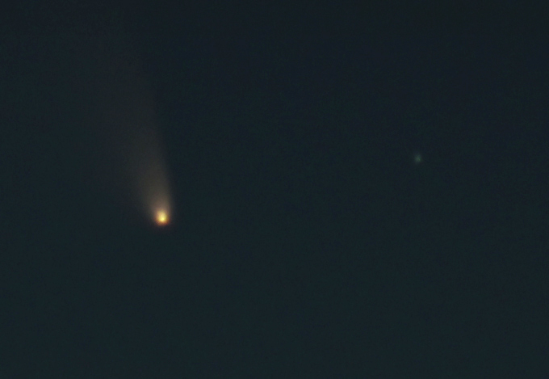

|
Apart from trying to take pictures of things on Earth every once in a while, I have always been fascinated by the idea of pointing a camera to the sky and capturing photons that have travel unimaginable distances. However, I have always lived in cities and never had my own telescope, so I had to start playing with camera lenses first.
|  |
{kind=link}
In March 2013, Comet C/2011 L4 (PANSTARRS) came close to Earth (1 AU away), and became visible from the Northern Hemisphere later that month. The comet had a visual magnitude of about 3 by then, which meant it was visible with the naked eye in areas with low light pollution levels. Although I was living in Madrid at the time, the European Space Astronomy Centre (ESAC, where I did my Ph.D.) is located far away from the city, and we were lucky enough to find PANSTARRS in between the clouds. By chance, that day I found out that the Center for Astrobiology (one of the institutes in the European Space Astronomy Centre) had a 9.25” Celestron telescope, and they kindle let me play with it. After a couple of days, I managed to get a better look at PANSTARRS.
 PANSTARRS,
2 minutes exposure.
PANSTARRS,
2 minutes exposure.
 Animation
of PANSTARRS moving through the sky. If you don´t see it moving, click on the image!
Animation
of PANSTARRS moving through the sky. If you don´t see it moving, click on the image!
Although the camera was not great (I used my old reflex camera), the images were much better than I expected, and it was more than enough to get me started: I spent several nights during my Ph.D. at ESAC trying to capture other objects in the sky. Here are some of the pictures I took (click on the images to enlarge them).
 M5 globular cluster.
M5 globular cluster.
 M13, Hercules globular cluster.
M13, Hercules globular cluster.
 M17, Omega Nebula.
M17, Omega Nebula.
 M27, Dumbbell Nebula.
M27, Dumbbell Nebula.
 Orion Nebula.
Orion Nebula.
 Moon terminator.
Moon terminator.
However, my best astrophotography attempt so far happended during a remote observing run with the Discovery Channel Telescope, in Arizona. This is a 4.3 meter telescope that is typically used for science observations, but at the very end of the night the clouds came in and covered our target. While waiting, I decided to target some beautiful objects in the night sky. The colors in the images are the result of combining observations at different wavelengths.
 Horsehead Nebula.
Horsehead Nebula.
 M81.
M81.
 Flame Nebula.
Flame Nebula.